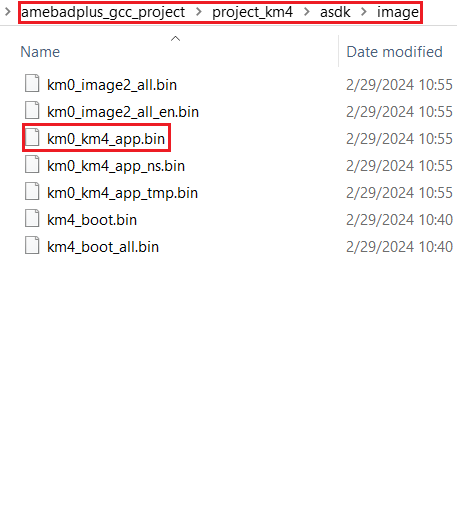
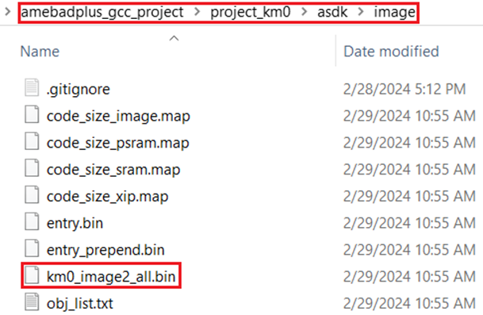
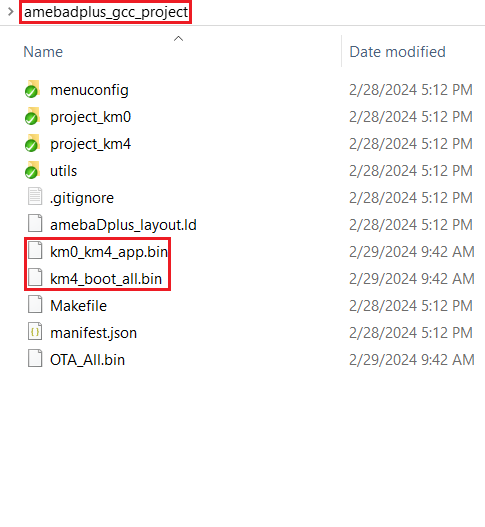
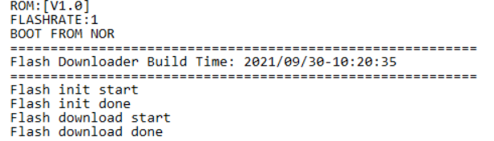
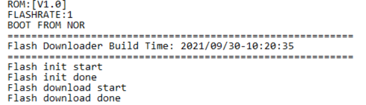
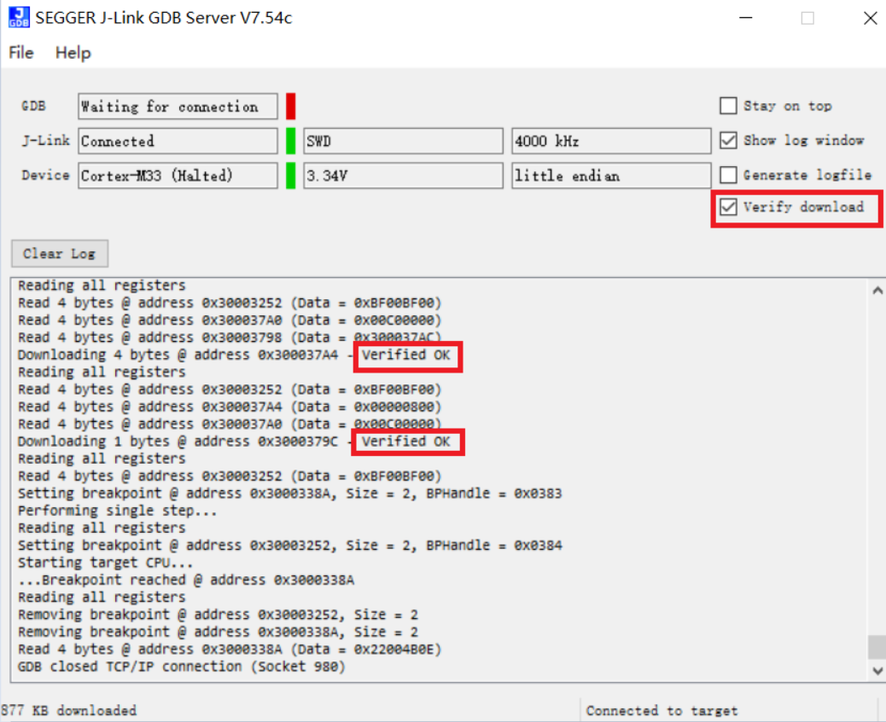

Build Environment
Introduction
This chapter illustrates how to build Realtek’s SDK under GCC environment. It focuses on both Windows platform and Linux distribution. The build and download procedures are quite similar between Windows and Linux operating systems.
For Windows, Windows 10 64-bit is used as a platform.
For Linux server, Ubuntu 16.04 64-bit is used as a platform.
Preparing GCC Environment
Windows
For Windows, use MSYS2 and MinGW as the GCC environment.
MSYS2 is a collection of tools and libraries providing an easy-to-use environment for building, installing, and running native Windows software.
MinGW is an advancement of the original mingw.org project. It is created to support the GCC compiler on Windows system.
The steps to prepare GCC environment are as follows:
Download MSYS2 from its official website .
Run the installer. MSYS2 requires 64-bit Windows 7 or newer.
Enter your desired ``Installation Folder ``(ASCII, no accents, spaces nor symlinks, short path)
When done, tick
Run MSYS2 now.Update the package database and base packages with:
pacman -Syu
When “Proceed with installation? [Y/n]” is displayed, type “Y” and continue until the package installation is done.

Note
After installation of MSYS2, there will be four start modes:
MSYS2 MinGW 32-bit
MSYS2 MinGW 64-bit
MSYS2 MinGW UCRT 64-bit
MSYS2 MSYS
Because the toolchain release will base on 64-bit MinGW, choose MSYS2 MinGW 64-bit when starting the MinGW terminal.
Run
MSYS2MinGW64-bitfromStartmenu. Update the rest of the base packages with:
pacman -Syu
When “Proceed with installation? [Y/n]” is displayed, type “Y” and continue until the package installation is done.

Install the necessary software packages with the commands below in order:
pacman –S make
pacman –S unzip
pacman –S gcc
pacman –S python
pacman –S ncurses-devel
pacman –S openssl-devel
pacman -S mingw-w64-x86_64-gcc-libs
When “Proceed with installation? [Y/n]” is displayed, type “Y” and continue until each software package installation is done.
Search the needed packages (used to compile TF-M) in and install them as you need with the commands below.
pacman -S diffutils
pacman -S vim
pacman -S python-pip
pacman -S cmake
pip install Jinja2
Remove the file path length limit by editing the registry to allow the file paths longer than 260 characters.
Press
Win+Rkeys to open theRundialog box, then type “regedit“ and pressEnterto open theRegistry Editor.Navigate to the registry key:
Computer\HKEY_LOCAL_MACHINE\SYSTEM\CurrentControlSet\Control\FileSystem.Search and check if the “LongPathsEnabled” item exists. If not, continue to step d); otherwise, go to step e).
Right-click on an empty space in the right pane, then select
New > DWORD (32-bit) Value, and name it “LongPathsEnabled“.Double-click on “
LongPathsEnabled“ and set its value to 1, then clickOKto save.
Linux
On Linux, 32-bit Linux is not supported because of the toolchain.
The packages listed below should be installed for the GCC environment:
gcclibncurses5bashmakelibssl-devbinutilspython3
Some of the packages above may have been pre-installed in your operating system. You can either use package manager or type the corresponding version command on terminal to check whether these packages have already existed. If not, make them installed.
$ls -l /bin/sh
Starting from Ubuntu 6.10, dash is used by default instead of bash. You can use $ ls -l /bin/sh command to check whether the system shell is bash or dash.
(Optional) If the system shell is dash, use
$sudodpkg-reconfiguredashcommand to switch from dash to bash.If the system shell is bash, continue to do the subsequent operations.

$make -v

$sudoapt-get installlibssl-dev

binutils
Use ld -v command to check if binutils has been installed. If not, the following error may occur.

Troubleshooting
MSYS2 pacman is responsible for managing and installing software, which is similar to apt-get in ubuntu. When “bash:XXX:command not found” appears, you can try instruction “pacman -S <package_name>” to install.
For detailed information of one package, try “pacman -Si <package_name>”.
If system head files are not found when building tool, “No such file or directory” error will show up. You can try “pacman -Fy <FILE_NAME>” to check which package is lost, and install the lost package. If too many packages are lost, look for detailed information about the packages to decide which to install.
For multi-version python host, command “
update-alternatives --install /usr/bin/python python /usr/bin/python3.x1“ can be used to select python of specific version 3.x, where x represents a desired version number.If the error “
command 'python' not found“ appears during compilation, type command “ln -s /usr/bin/python3 /usr/bin/python“ first to make sure that python3 is used when running python.
Installing Toolchain
Windows
This section introduces the steps to prepare the toolchain environment.
Acquire the zip files of |CHIP_NAME| toolchain from Realtek.
Create a new directory
rtk-toolchainunder the path{MSYS2_path}\opt.
For example, if your MSYS2 installation path is as set in section 1.2.1 step (3), the rtk-toolchain should be in C:\msys64\opt.

Unzip
asdk-10.3.x-mingw32-newlib-build-xxxx.zipand place the toolchain folderasdk-10.3.xto the folderrtk-toolchaincreated in step (2).

Note
The unzip folders should stay the same with the figure above and do NOT change them, otherwise you need to modify the toolchain directory in makefile to customize the path.
If an error of the toolchain, just like the log “Error: No Toolchain in /opt/rtk-toolchain/vsdk-10.3.1/mingw32/newlib” appears when building the project, find out if your toolchain files directory are not the same with the directory in the log. Place the toolchain files correctly and try again.
Linux
This section introduces the steps to prepare the toolchain environment.
Acquire the zip files of |CHIP_NAME| toolchain from Realtek.
Create a new directory
rtk-toolchainunder the path/opt.

Unzip
asdk-10.3.x-linux-newlib-build-xxxx.tar.bz2to/opt/rtk-toolchain, then you can get the directory below:

Note
The unzip folders should stay the same with the figure above and do NOT change them, otherwise you need to modify the toolchain directory in makefile to customize the path.
Configuring SDK
This section illustrates how to change SDK configurations.
User can configure SDK options for KM0 and KM4 at the same time through $ make menuconfig command.
Switch to the directory
{SDK}\amebadplus_gcc_projectRun
$ makemenuconfigcommand on MSYS2 MinGW 64-bit (Windows) or terminal (Linux)
Note
$ make menuconfig command is only supported under {SDK}\amebadplus_gcc_project, but not supported under other paths.
The main configurable options are divided into four parts:
General Config: the shared kernel configurations for KM4 and KM0. The configurations will take effect in both KM4 and KM0.
Network Config: the shared kernel configurations for KM4 and KM0. The configurations will take effect in both KM4 and KM0.
KM4 Config: the exclusive kernel configurations for KM4. The configurations will take effect only in KM4 but not in KM0.
KM0 Config: the exclusive kernel configurations for KM0. The configurations will take effect only in KM0 but not in KM4.
Figure 1-1 is the menuconfig UI, and the options in red may be used frequently.
Figure 1-1 menuconfig UI
Building Code
This section illustrates how to build SDK for both Windows and Linux. Table 1-1 lists all the GCC project directories of SDK.
Table 1-1 GCC project directory
GCC project |
Directory |
|---|---|
KM4 |
{SDK}amebadplus_gcc_projectproject_km4 |
KM0 |
{SDK}amebadplus_gcc_projectproject_km0 |
Note
Replace the {SDK} with your own SDK directory.
There are two ways to build the SDK, you can choose either of them.
Build One by One
Follow these steps to build the SDK of KM4 and KM0 project one by one:
Use
$ cdcommand to switch to the project directories of SDK on Windows or Linux.
For example, you can type $ cd {SDK}\amebadplus_gcc_project\project_km4 to switch to the KM4 project, the same operation for the KM0 project.
Build SDK under the KM0 or KM4 project directory on Windows or Linux.
For normal image, simply use
$ make allcommand to build SDK.For MP image, refer to Section
错误!未找到引用源。to build SDK.
Check the command execution results. If somehow failed, type
$ make cleanto clean and then redo the make procedure.For KM4 project, if the terminal contains “target_img2.axf” and “Image manipulating end” message (see Figure 1-2), it means that KM4 images have been built successfully. You can find them under
\amebadplus_gcc_project\project_km4\asdk\image, as shown in Figure 1-3.For KM0 project, if the terminal contains “target_img2.axf” and “Image manipulating end” message (see Figure 1-4), it means that KM0 image has been built successfully. You can find it under
\amebadplus_gcc_project\project_km0\asdk\image, as shown in Figure 1-5.

Figure 1-2 KM4 project make all
{kind=link}
Figure 1-3 KM4 image generation

Figure 1-4 KM0 project make all
{kind=link}
Figure 1-5 KM0 image generation
Build Together
In order to improve the efficiency of building SDK, you can also execute $ make all command once under \amebadplus_gcc_project, instead of executing $ make all command separately under the KM0 project and KM4 project.
If the terminal contains “target_img2.axf” and “Image manipulating end” message (see Figure 1-6), it means that all the images have been built successfully. The image files are generated under
\amebadplus_gcc_project, as shown in Figure 1-7. You can also find them under\amebadplus_gcc_project\project_km0\asdk\imageand\amebadplus_gcc_project\project_km4\asdk\image.If somehow failed, type
$ make cleanto clean and then redo the make procedure.

Figure 1-6 KM4 & KM0 projects make all
{kind=link}
Figure 1-7 KM4 & KM0 image generation
Note
If you want to search some .map files for debugging, get them under the directory {SDK}\amebadplus_gcc_project\project_km0\ asdk\image or {SDK}\amebadplus_gcc_project\project_km4\asdk\image, but not {SDK}\amebadplus_gcc_project.
Setting Debugger
J-Link
The |CHIP_NAME| supports J-Link debugger. Before setting J-Link debugger, you need to do some hardware configuration and download images to the |CHIP_NAME| device first.
Connect J-Link to the SWD of |CHIP_NAME|.
Refer to Figure 1-13 to connect SWCLK pin of J-Link to SWD CLK pin of |CHIP_NAME|, and SWDIO pin of J-Link to SWD DATA pin of |CHIP_NAME|.
Connect the |CHIP_NAME| device to PC after finishing these configurations.
Figure 1-13 Wiring diagram of connecting J-Link to SWD
Note
For |CHIP_NAME|, the J-Link version must be v9 or higher. If Virtual Machine (VM) is used as your platform, make sure that the USB connection setting between VM host and client is correct, so that the VM host can detect the device.
Download images to the |CHIP_NAME| device via ImageTool.
ImageTool is a software tool provided by Realtek. For more information, refer to 错误!未找到引用源。.
Windows
Besides the hardware configuration, J-Link GDB server is also required to install.
For Windows, click and download the software in “J-Link Software and Documentation Pack”, then install it correctly.
Note
The version of J-Link GDB server below is just an example, you can select the latest version to download.
KM4 Setup
Execute the
cm4_jlink.bat
Double-click the`` cm4_jlink.bat \ under\ `` {SDK}\amebadplus_gcc_project\utils\jlink_script. You may have to change the path of JLinkGDBServer.exe and JLink.exe in the cm4_jlink.bat script according to your own settings.
The started J-Link GDB server looks like Figure 1-14. This window should NOT be closed if you want to download the image or enter debug mode.

Note
Keep this window active to download the images to target.

Figure 1-14 KM4 J-Link GDB server connection under Windows
Setup J-Link for KM4

Figure 1-15 KM4 J-Link setup under Windows
KM0 Setup
Execute the
cm0_jlink.bat
Double-click the cm0_jlink.bat under {SDK}\amebadplus_gcc_project\utils\jlink_script, the same as executing the cm4_jlink.bat.
The started J-Link GDB server looks like Figure 1-16. This window should NOT be closed if you want to download the image or enter debug mode. Because KM4 will download all the images, you don’t need to connect J-Link to KM0 when downloading images. J-Link can connect to KM0 when debugging.

Figure 1-16 KM0 J-Link GDB server connection under Windows
Setup J-Link for KM0

Figure 1-17 KM0 J-Link setup under Windows
Linux
For J-Link GDB server, click and download the software in “J-Link Software and Documentation Pack”. It is suggested to use Debian package manager to install the Debian version.
Open a new terminal and type the following command to install GDB server. After the installation of the software pack, there is a tool named “JLinkGDBServer” under the J-Link directory. Take Ubuntu 18.04 as an example, the JLinkGDBServer can be found at /opt/SEGGER/JLink.
$ dpkg –i jlink_6.0.7_x86_64.deb
Note
The version of J-Link GDB server below is just an example, you can select the latest version to download.
KM4 Setup
Connect to KM4
Open a new terminal under directory`` /amebadplus_gcc_project/utils/jlink_script``.
Type
$ /opt/SEGGER/JLink/JLinkGDBServer-select USB -deviceCortex-M33 -if SWD -scriptfile AP2_KM4.JLinkScriptport 2335.

Figure 1-18 KM4 J-Link GDB server connection setting under Linux
If the connection is successful, the log is shown as Figure 1-19. This terminal should NOT be closed if you want to download software or enter GDB debugger mode.

Figure 1-19 KM4 J-Link GDB server connection success under Linux
Setup J-Link for KM4
Open a new terminal under project_km4 folder.
Type
$ make setup GDB_SERVER=jlinkcommand before using J-Link to download software or enter GDB debugger.

Figure 1-20 KM4 J-Link terminal setup under Linux
KM0 Setup
Connect to KM0
Open a new terminal under directory
/amebadplus_gcc_project/utils/jlink_script.Type
$ /opt/SEGGER/JLink/JLinkGDBServer-select USB -device Cortex-M23 -if SWD -scriptfileAP1_KM0.JLinkScript port 2331.

Figure 1-21 KM0 J-Link connection setting under Linux
If the connection is successful, the log is shown below.

Figure 1-22 KM0 J-Link GDB server connection success under Linux
Setup J-Link for KM0
Open a new terminal under project_km0.
Type
$ make setup GDB_SERVER=jlinkcommand before using J-Link to download software or enter GDB debugger.
{kind=link}
Figure 1-23 KM0 J-Link terminal setup under Linux
Downloading Image to Flash
There are two ways to download image to Flash:
Image Tool, a software provided by Realtek (recommended). For more information, refer to
错误!未找到引用源。.GDB Server, mainly used for GDB debug user case.
This section illustrates the second method to download images to Flash.
To download software into Device Board, make sure the steps mentioned in Section 1.5 are done, and then type $ make flash command on MSYS2 (Windows) or terminal (Linux).
Images are downloaded only under KM4 by this command. This command downloads the software into Flash and it will take several seconds to finish, as shown in Figure 1-24.
 

{kind=link}
Figure 1-24 Download codes success log
To check whether the image is downloaded correctly into memory, you can select “verify download” before downloading images, and during image download process, “verified OK” log will be shown.
{kind=link}
Figure 1-25 Verify download
After download is successful, press Reset button and you will see that the device boots with the new image.
Note
The command is only supported to use in KM4 project, and km4_boot_all.bin & KM0_km4_app.bin can be downloaded to Flash.
Entering Debug Mode
GDB Server
To enter GDB debugger mode, follow the steps below:
Make sure that the steps mentioned in Sections 1.4 to 1.6 are finished, then reset the device.
Change directory to target project which can be project_km4 or project_km0, and type
$ make debugcommand on MSYS2 (Windows) or terminal (Linux).
J-Link
Steps
Press ⊞
Win+R ``\ on your keyboard. Hold down the Windows key on your keyboard, and press the "R" button. This will open the "Run" tool in a new pop-up window. Alternatively, you can find and click \ ``Runon the Start menu.Type
cmdin the Run window. This shortcut will open the Command Prompt terminal.Click ``OK ``in the Run window. This will run your shortcut command, and open the Command Prompt terminal in a new window.
Copy the J-Link script command below for specific target:
For KM4:
"{Jlink_path}\JLink.exe" -device Cortex-M33 -if SWD -speed 4000 -autoconnect 1
For KM0:
"{Jlink_path}\JLink.exe" -device Cortex-M23 -if SWD -speed 4000 -autoconnect 1
Note
The J-Link connection command path mentioned above are:
{Jlink_path}: the path your Segger J-Link installed, the default is “C:Program Files (x86)SEGGERJLink”.
{scriptpath}: {SDK}amebadplus_gcc_projectutilsjlink_script.
Commands
The following commands are often used when the program is stuck. All commands are accepted case insensitive.
Command (long) |
Command (short) |
Syntax |
Explanation |
|---|---|---|---|
Halt |
H |
Halt CPU |
|
Go |
G |
Start CPU if halted |
|
Mem |
Mem <Addr> <NumBytes> |
Read memory and show corresponding ASCII values |
|
SaveBin |
SaveBin <FileName> <Addr> <NumBytes> |
Save target memory range into binary file |
|
Exit |
Close J-Link connection and quit |
For more information, you can visit .
Note
You can type “H” and “G” several times and record the PC, then look for the PC in which function in asm file. This function might be where you get stuck.
You can also use “mem” to dump some address after “sp”, from these addresses you can find the function call stack.
Command Lists
The commands mentioned above are listed in Table 1-2.
Table 1-2 Command lists
Usage |
Command |
Description |
|---|---|---|
all |
$ make all |
Compile the project to generate ram_all.bin |
setup |
$ make setup GDB_SERVER= jlink |
Select GDB_SERVER |
flash |
$ make flash |
Download ram_all.bin to Flash |
clean |
$ make clean |
|
debug |
$ make debug |
Enter debug mode |
GDB Debugger Basic Usage
GDB, the GNU project debugger, allows you to examine the program while it executes, and it helps catch bugs. Section 1.8 has described how to enter GDB debugger mode, this section illustrates some basic usage of GDB commands. For further information about GDB debugger, click . Table 1-3 describes commonly used instructions and their functions, and specific usage can be found in GDB User Manual of website .
Table 1-3 GDB debugger command list
Usage |
Command |
Description |
|---|---|---|
Breakpoint |
$ break |
Breakpoints are set with the break command (abbreviated b). The usage can be found at |
Watchpoint |
$ watch |
You can use a watchpoint to stop execution whenever the value of an expression changes. The related commands include watch, rwatch, and awatch. The usage of these commands can be found at Note Keep the range of watchpoints less than 20 bytes. |
Print breakpoints & watchpoints |
$ info |
To print a table of all breakpoints, watchpoints set and not deleted, use the info command. You can simply type info to know its usage. |
Delete breakpoints |
$ delete |
To eliminate the breakpoints, use the delete command (abbreviated d). The usage can be found at |
Continue |
$ continue |
To resume program execution, use the continue command (abbreviated c). The usage can be found at |
Step |
$ step |
To step into a function call, use the step command (abbreviated s). It will continue running your program until the control reaches a different source line. The usage can be found at |
Next |
$ next |
To step through the program, use the next command (abbreviated n). The execution will stop when the control reaches a different line of code at the original stack level. The usage can be found at |
Quit |
$ quit |
To exit GDB debugger, use the quit command (abbreviated q), or type an end-of-file character (usually Ctrl-d). The usage can be found at |
Backtrace |
$ backtrace |
A backtrace is a summary of how your program got where it is. You can use backtrace command (abbreviated bt) to print a backtrace of the entire stack. The usage can be found a |
Print source lines |
$ list |
To print lines from a source file, use the list command (abbreviated l). The usage can be found at |
Examine data |
To examine data in your program, you can use print command (abbreviated p). It evaluates and prints the value of an expression. The usage can be found at |